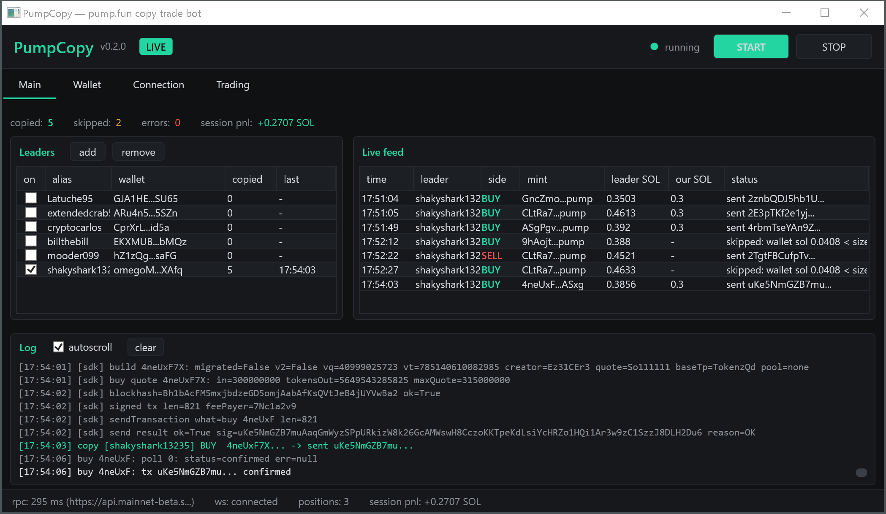
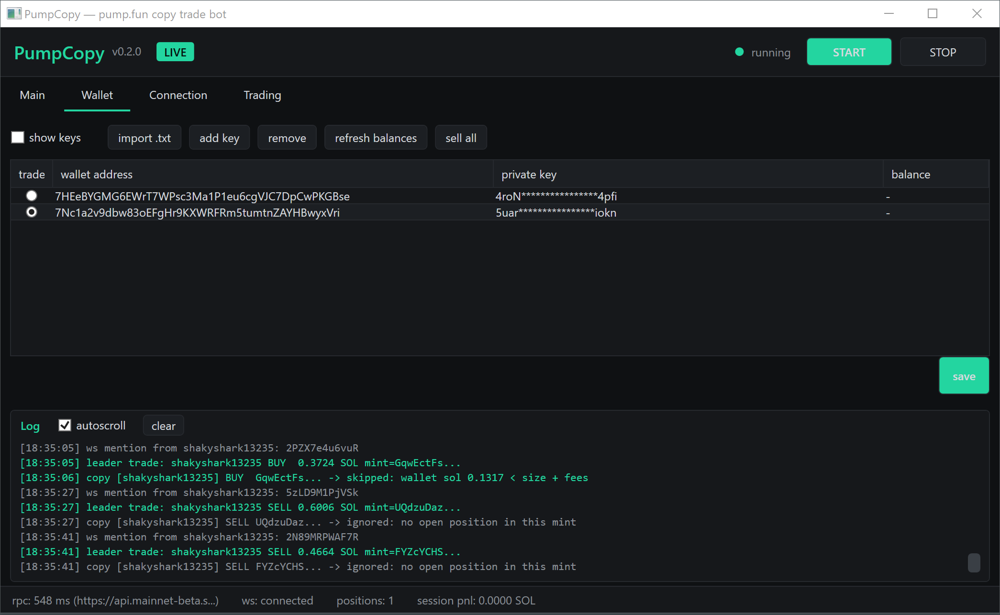
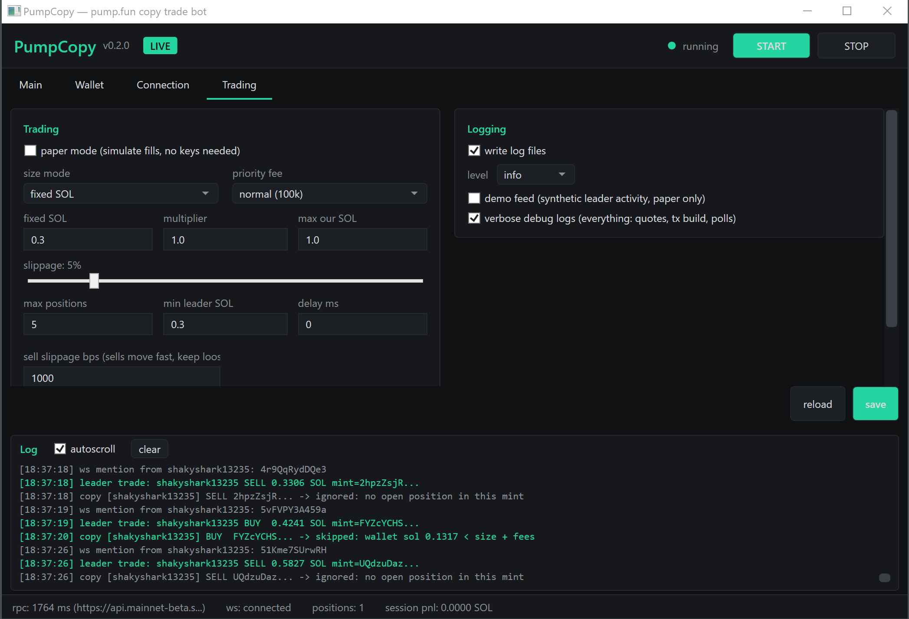
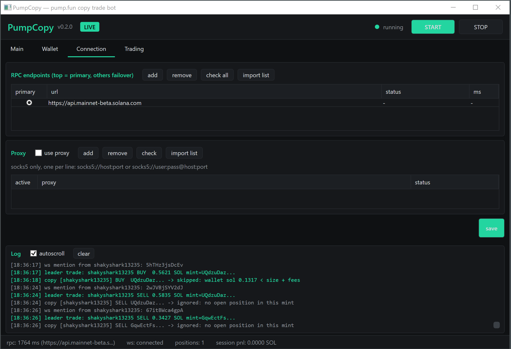

Pump.fun copy trading bot for Windows
PumpCopy watches whale wallets on pump.fun and mirrors their bonding-curve buys and sells from your own wallet. A desktop app, not a telegram bot, not a custodial service. Your keys, your transactions.
download v0.2.1 source on github free, open source, Windows 10/11 x64

What it copies
The app subscribes to transaction logs over websocket, decodes pump.fun trade events from wallets you list as leaders, and sends the same side from your wallet. You copy actual fills decoded from the chain, not price moves and not screenshots of a leaderboard.
- Buys fixed SOL size or proportional to the leader, with a per-leader multiplier while you test a new wallet.
- Sells proportional to your remaining bag. Leader closes the token account, yours gets closed too.
- Filters that keep dust out: min leader SOL, max your SOL, max open positions, skip migrated curves, random delay before copying.
- RPC pool with failover and round-robin, optional socks5 proxy for both HTTP and websocket.
- Live feed table with every copied trade, session stats and pnl, rolling file logs when something looks wrong.
- Paper mode and a demo feed, so you can watch leader trades turn into copies before a single real lamport moves.
Screenshots



Quick start
- Unpack the release zip anywhere and run
PumpCopy.App.exe. First start writesconfig.jsonnext to it. - Connection tab: add your RPC endpoints. A private Helius or Quicknode key behaves much better than a public endpoint.
- Wallet tab: import a fresh wallet key and pick it as the trading wallet. Not your main wallet, ever.
- Main tab: add leader wallets, press START. Keep paper mode on for the first session and watch the feed before you fund anything.
The full per-tab guide with screenshots is in SETUP.md in the repo.
Requirements
- Windows 10/11 x64
- A Solana wallet with SOL for trades and fees, funded with money you can lose
- An RPC endpoint, private Helius or Quicknode recommended
- Stable internet. A VPS close to your RPC cuts latency but is not required
FAQ
Does pump.fun have copy trading built in?
No. The pump.fun site and the official Terminal let you trade faster, but neither mirrors another wallet for you. Copy trading happens through bots and services like this one. PumpCopy reads leader fills from the chain and trades from your own wallet.
Is copy trading on pump.fun legal?
The bot only automates your own trades: your key signs your transactions from your machine, the same as any trading script. Copying public on-chain activity is not insider trading and not front-running someone's private flow. What gets people in trouble is managing other people's money without licenses, so keep it to your own wallet.
Does copy trading actually make money?
Sometimes, and less than the leaderboard screenshots suggest. Most memecoins go to zero, a profitable leader wallet can have five bad weeks in a row, and slippage plus MEV eats more than people expect. Treat it as high-risk automation with money you have already written off.
Are my keys safe in this app?
Signing happens locally and the key never leaves your disk, there is no server and no upload anywhere. But a hot key on a connected Windows box is still a hot key. Use a fresh wallet, keep the balance small, do not reuse the key anywhere else.
Do I need a VPS to run it?
No, the app is a normal desktop program. A VPS near your RPC helps when you copy fast wallets into thin curves, because every millisecond of delay is price you pay on entry.
Risk warning
Memecoin trading on pump.fun is extremely high risk. Most tokens go to zero, copying a profitable wallet does not make you profitable, and failed transactions still cost fees. PumpCopy is automation software, not financial advice, with no warranty of any kind. You are responsible for the keys you load into it and the trades it sends.
Donate
If the bot paid for itself and you want to say thanks:
SOL Huw2ywYDAjhr1VjBVP4bspLw2Pmx1GFcv3ZsmZUkxYDg
ETH 0x6c4698288525676B43f60aFCf39b2044811B9B85